กระทู้เก่าก็ปิดไปละ จะปล่อยให้ว่างๆไปมันก็กระไรอยู่ เลยขอทำ Guide ขึ้นมาเองเลยละกัน
ผมเป็นคนค่อนข้างขี้เกียจส่วนที่น่าจะรู้กันอยู่แล้วก็ของละไว้ในฐานที่เข้าใจไปเลยละกัน
อาจจะทำไม่ค่อยสวยเท่าไหร่ตารางรู้สึกจะค่อนข้างใหญ่แล้วภาษาอาจจะไม่ค่อยดีเท่าที่ควร
เอาเป็นว่า
ยินดีต้อนรับสู่ Warlock Guide
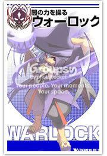
Warlock เป็นอาชีพสาย Spell Users ที่ใช้เวทมนต์ธาตุมืดซึ่งได้เปรียบธาตุดิน น้ำ ลม ไฟแต่เสียเปรียบธาตุแสง
Warlock ยังมีข้อได้เปรียบคือมี HP สูงกว่า Spell Users สายอื่นและสามารถใช้โล่ได้
อาวุธที่สามารถใส่ได้คือ มืด คทา ตะบองและโล่
วิธีเปลี่ยนอาชีพ Warlock สามารถดูได้ที่นี่
Job bonus ของ Warlock


รายละเอียดสกิล
Black Widow
Job Lv : 1
Active
ระยะ : 6
เป็นการใช้เวทมนตร์ที่มีคุณสมบัติแห่งความมืดโจมตีศัตรู
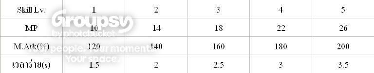
เป็นสกิลแรกของ Warlock มีความรุนแรงไม่มาก ไม่จำเป็นต้องอัพเต็มเพราะร่ายค่อนข้างนานหรืออัพแล้วรีสกิลทีหลังก็ได้

Increase Max Mp
Job Lv : 3
Passive
เพิ่มพลัง MP สูงสุด
เป็นสกิลที่ช่วยเพิ่ม Max MP ของเราซึ่งเพิ่มสูงสุดได้ 60 หน่วย
Increase Hp Recovery
Job Lv : 5
Passive
เพิ่มอัตราการฟื้นฟู MP
เป็นสกิลที่จำเป็นโดยเมื่อมีการฟื้น MP ทุกๆรูปแบบจะเพิ่มมากขึ้น
Short Sword Mastery
Job Lv : 7
Passive
เมื่อสวมใส่มีดสั้นแล้วจะเพิ่มค่า Min Attack
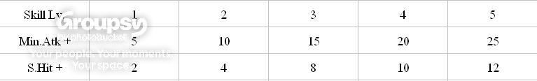
เป็นสกิลที่เหมาะสำหรับ Warlock สาย Str เมื่อใช้มีด
Mace Mastery
Job Lv : 9
Passive
เมื่อสวมใส่คทาแล้ว จะเพิ่มค่า Min Attack
เป็นสกิลที่เหมาะสำหรับ Warlock สาย STR เมื่อใช้ตะบอง
Blow
Job Lv : 10
Active
ตีศัตรูด้วยอาวุธ
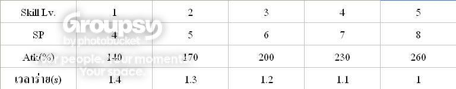
เป็นสกิลที่เหมาะสำหรับ Warlock สาย STR เป็นการโจมตีด้วยการทุบ
Undead Knowledge
Job Lv : 12
Passive
สามารถหาไอเทมจาก Undead ได้ง่ายๆ
ทำให้ Undead ดรอปของง่ายขึ้นแต่เหมาะสำหรับสาย STR มากกว่าเพราะ Undead ทุกตัวเป็นธาตุมืดสาย MAG โจมตีได้ยาก
Magic Stun
Job Lv : 14
Active
ระยะ : 5
เป็นการใช้พลังเวทมนตร์ ทำให้เป้าหมายถูก Stun ในเวลาที่กำหนด
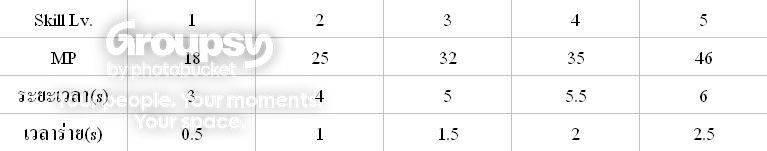
มอนส์เตอรที่ติดสถานะ Stun จะไม่สามารถเคลื่อนไหวได้และจะไม่กระเด็น
มอนส์เตอร์ส่วนมากต้าน Stun
Magic Confusion
Job Lv : 16
Active
ระยะ : 5
เป็นการใช้พลังเวทมนตร์ ทำให้เป้าหมายตกอยู่ในสภาวะสับสนในเวลาที่กำหนด
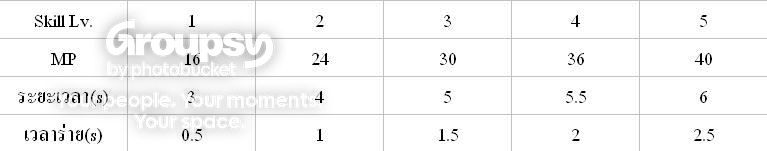
มอนส์เตอร์ที่ติดสถานะ Confuse จะโจมตีใส่เป้าหมายที่อยู่ใกล้รวมทั้งมอนส์เตอร์ด้วยกันเอง
Parry
Job Lv : 16
Active
สามารถหลบหลีกการโจมตีได้ ในกรณีที่ถูกโจมตีในช่วงเวลาที่แสดงผล
Counter
Job Lv : 18
Active
สามารถโต้กลับได้ทันที 1 ครั้ง เมื่อถูกจู่โจมในช่วงเวลาที่กำหนด
Feint
Job Lv : 20
Active
ในตอนที่ล้มเหลวจากการใช้ Parry หรือ Counter ในการทำลายท่าของศัตรูร่างกายจะแข็งในช่วงเวลาหนึ่ง
Increase Mace Hit
Job Lv : 21
Passive
เพิ่มความแม่นยำเมื่อสวมใส่คทา
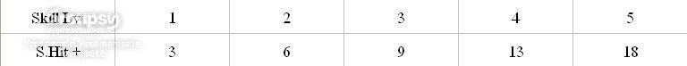
เป็นสกิลที่เหมาะสำหรับ Warlock สาย STR เมื่อใช้ตะบอง
Magic Slow
Job Lv : 24
Active
ระยะ : 5
เป็นการใช้พลังเวทมนตร์ทำให้เป้าหมายเชื่องช้าในเวลาที่กำหนด
มอนส์เตอร์ที่ติดสถานะ Slow ความเร็วในการเคลื่อนไหวและโจมตีจะลดลง
Magic Freeze
Job Lv : 26
Active
ระยะ : 5
เป็นการใช้พลังเวทมนตร์ทำให้เป้าหมายถูกแช่แข็งในเวลาที่กำหนด
มอนส์เตอร์ที่ติดสถานะ Freeze จะไม่สามารถเคลื่อนไหวได้และจะไม่กระเด็น
มอนส์เตอร์ที่ติดสถานะ Freeze จะเป็นธาตุน้ำ 100%
Magic Silence
Job Lv : 27
Active
ระยะ : 5
เป็นการใช้พลังเวทมนตร์ทำให้เป้าหมายถูก Silence ในเวลาที่กำหนด
มอนส์เตอร์ที่ติดสถานะ Silence ไม่สามารถใช้สกิลได้
Chaos Widow
Job Lv : 30
Active
ระยะ : 6
เป็นการใช้เวทมนตร์ที่มีพลังแห่งความมืดโจมตีศัตรู เป็นเวทมนตร์ที่สูงกว่า Black Widow
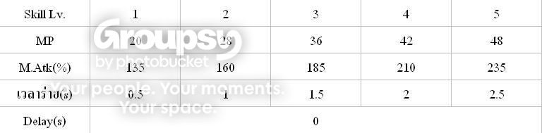
เป็นสกิลที่ร่ายเร็วแต่ใช้ MP ค่อนข้างสูงและรุนแรงไม่มากควรอัพแค่ 1
Dark Shield
Job Lv : 32
ระยะ : 6
Active
ทำให้ร่างกายของเป้าหมายกลายสภาพเป็นความมืด(ใช้กับศัตรูไม่ได้)
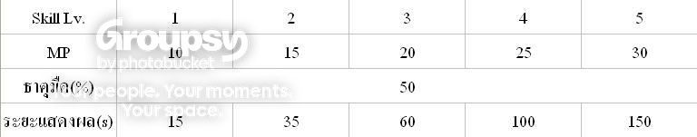
ทำให้ความเสียหายจากสกิลธาตุมืด ดิน น้ำ ลม ไฟของศัตรูลดลงแต่ธาตุแสงจะมากขึ้นไม่มีผลกับการโจมตีปกติ
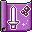
Dark Weapon
Job Lv : 35
Active
ระยะ : 6
ใส่พลังความมืดลงในอาวุธของเป้าหมาย
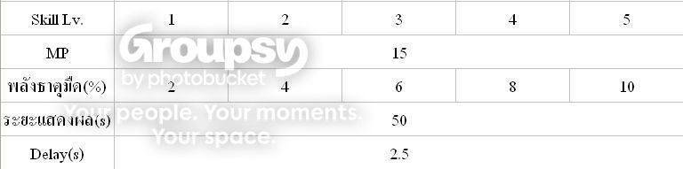
ช่วยเพิ่มความเสียเมื่อโจมตีใส่ศัตรูธาตุดิน น้ำ ลม ไฟแต่ลดลงเมื่อเป้าหมายเป็นธาตุมืดหรือแสง เหมาะสำหรับสาย STR
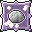
Magic Medusa
Job Lv : 37
Active
ระยะ : 5
เป็นการใช้พลังเวทมนตร์ทำให้เป้าหมาย ถูกสาบเป็นหินในช่วงเวลาที่กำหนด
มอนส์เตอร์ที่ติดสถานะ Stone จะไม่สามารถเคลื่อนไหวได้และจะไม่กระเด็น
มอนส์เตอร์ที่ติดสถานะ Stone จะเป็นธาตุดิน 100%
Shield Mastery
Job Lv : 38
Passive
Passive Skill เมื่อสวมใส่โล่ห์แล้วจะเพิ่มอัตราความสำเร็จในการบล็อก
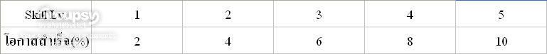
Shadow Blast
Job Lv : 40
Active
ระยะ : 6
เป็นการโจมตีโดยใช้เวทมนต์ธาตุมืดพุ่งใส่ขอบเขตของเป้าหมาย
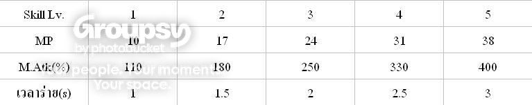
เป็นสกิลที่รุนแรงแต่ความเสียหายจะหารตามมอนส์เตอร์ที่โดนสกิลนี้
สกิลนี้ควรอัพให้ได้
Magic Poison
Job Lv : 45
Active
ระยะ : 5
เป็นการใช้เวทมนตร์เพื่อทำให้เป้าหมายตกอยู่ในสภาพติดพิษในเวลาที่กำหนด
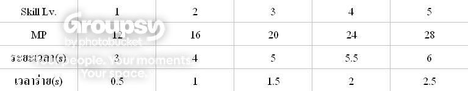
มอนส์เตอร์ที่ติด Poison HP จะลดลงเรื่อยๆและโจมตีกับป้องกันจะลดลง
Dark Groove
Job Lv : 50
Active
ปล่อยบอลแห่งความมืดออกไปที่สามารถทะลุผ่านทุกอย่างได้
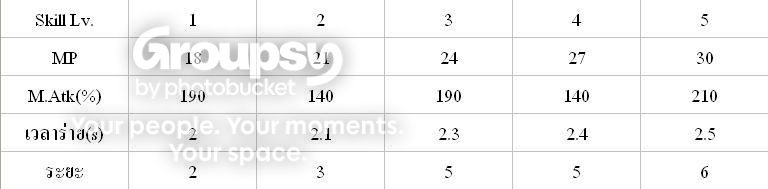
เป็นสกิลที่ปล่อยบอลความมืดโดยจะทำให้ศัตรูกระเด็นและโดนครั้งต่อๆไป อาจไม่จำเป็นต้องอัพแต่เป็นสกิลที่ค่อนข้างมีประโยชน์ในภายหลัง
____________________________________________________________
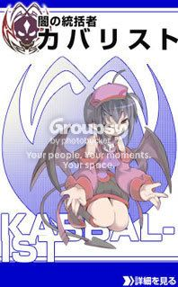
วิธีเปลี่ยนอาชีพ Kabbalist ดูได้ที่นี่
Job bonus ของ Kabbalist

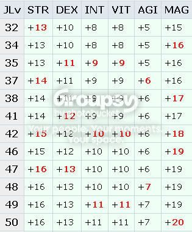
รายละเอียดสกิล
Food Fighter
Job Lv : 1
Passive
ทำให้ผลของอาหารมีคุณภาพมากขึ้น และเพิ่มความเร็วในการกินด้วย
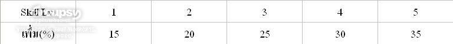
ถ้าอัพ Increase Hp Recovery หรือได้รับผลของ Holy Feather จำทำไห้ได้รับผลมากขึ้น
Soul Steal
Job Lv : 1
Active
เป็นการโจมตีเป้าหมายด้วยพลังความมืด และดูดซับ MP ส่วนหนึ่งของ Damage
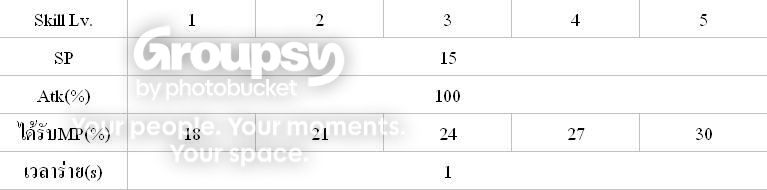
เป็นการโจมตีธาตุมืด 100%
MP ที่ได้ ขึ้นอยู่กับความเสียหายที่เกิด
เหมาะกับสาย STR-MAG
Fairy, Marionette Damage
Job Lv : 3
Passive
เพิ่มความเสียหายทางกายภาพแก่เป้าหมายที่เป็นภูติหรือMarionette
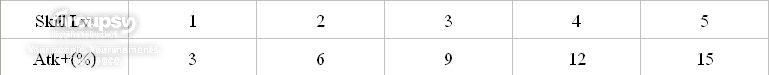
Undead Analysis
Job Lv : 5
Active
ระยะ : 3
การวิจัยระดับสูงของ Undead Knowledge จะทำให้สามารถสกัดไอเท็มได้เยอะขึ้น
มอนส์เตอร์ที่ได้รับผลของสกิลนี้ การดรอปของจะเหมือนมี Undead Knowledge อยู่
ไม่แนะนำให้อัพ
Grim Reaper
Job Lv : 5
Active
เป็นการโจมตีเป้าหมายด้วยการใช้ดาบที่มีพลังแห่งความมืด
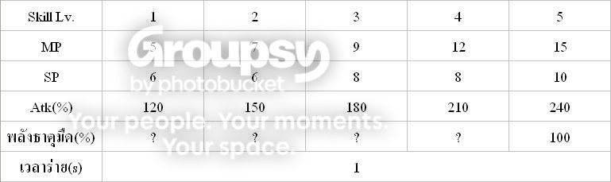
สกิลนี้เป็นการทุบ
Dark Limit
Job Lv : 8
Passive
เพิ่มคุณสมบัติธาตุมืดใส่ในร่าง
เป็นการเพิ่มคุณสมบัติธาตุมืดแบบถาวร ยกเว้นจะรีสกิลออก มีผลต่อการโดนสกิลที่มีธาตุเท้านั้น
ไม่แนะนำให้อัพ
Sleep Cloud
Job Lv : 10
Active
ระยะ : 6
ขอบเขต : 3x3
เป็นการสร้างควันในขอบเขตทำให้เป้าหมายหลับ
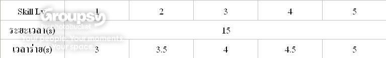
มอนส์เตอร์ที่ติดสถานะ Sleep จะไม่สามารถเคลื่อนไหวได้แต่ถ้าโดนโจมตี สถานะจะยกเลิกทันที
ร่อยค่อนข้างนาน แต่โอกาสำเร็จค่อนข้างสูง
All Rate Up
Job Lv : 13
Passive
ช่วยเพิ่มอัตราความสำเร็จของสกาวะผิดปกติ
Dark Power Circle
Job Lv : 15
Active
ระยะ : 6
ขอบเขต : 3x3
สร้างพลังแห่งความมืดลงบนพื้น เป็นวงกว้างในช่วงเวลาหนึ่ง
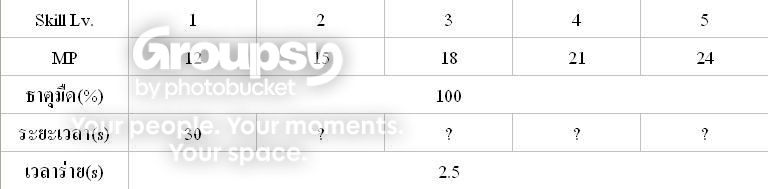
เปลี่ยนธาตุของพื้นที่ให้เป็นธาตุมืด 100%
Trance Form
Job Lv : 18
Active
LV1 ระหว่างที่แปลงร่างเป็น [Dracky] จะสามารถใช้ [Drain Hp] และ [Hiding] ได้
LV2 เป็นการแปลงร่างเป็น [Magic Wolf] จะสามารถใช้ [Rage About] และ [Roaring] ได้
LV3 เปลี่ยนร่างเป็น [Spell Caster] ในช่วงเวลาหนึ่ง ในระหว่างที่เปลี่ยน จะสามารถใช้ [Energy Shock] [Magic Shield] และ [Energy Shield] ได้
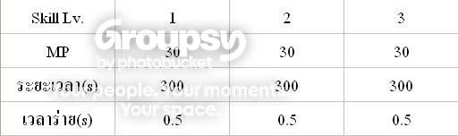
Drain Hp
Passive
เมื่อโจมตีใส่มอนส์เตอร์ประเภท Human Bird Animal หรือ Fish จะมีโอกาสที่ HP จะเพิ่มขึ้น
Mark
Job Lv : 20
Active
ระยะ : 6
เป็นการสร้างรอยประทับที่ใต้เท้า จะแสดงผลเมื่อใช้กับสกิล [Dark Pain]
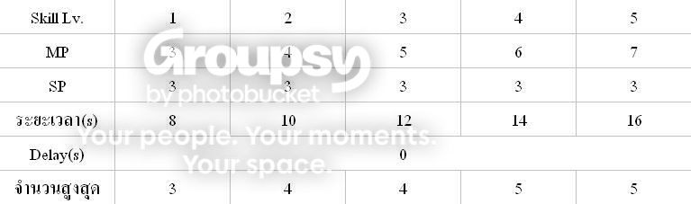
viewtopic.php?t=7979&start=489
Credit : Hrist
Dark Pain
Job Lv : 20
Active
โจมตีด้วยเวทมนต์แห่งความมืดใส่พื้นที่ที่มีการติดตั้ง [Mark]
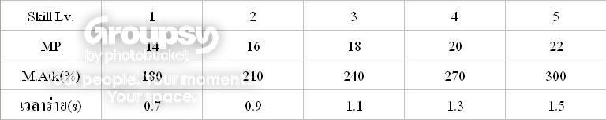

Fanaticism
Job Lv : 25
Active
ระยะ : 5
ทำให้เป้าหมายอยู่ในสภาพ Berserk หากสำเร็จ เป้าหมายนั้น จะสูญเสียการควบคุมตนเองไปในช่วงเวลาหนึ่ง
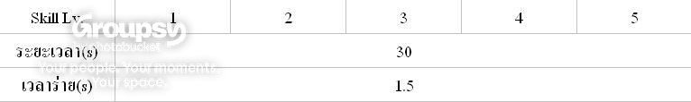
มีโอกาสสำเร็จคอ่นข้างสูง
มอนส์เตอร์ที่ติดสถานะ Berserk จะมีลักษณะคล้าย Confuse แต่ Atk จะเพิ่มเป็น 2 เท่า
Ultra Ego
Job Lv : 28
Active
เมื่อได้รับ Damage ในช่วงเวลาที่แสดงผล จะสามารถเคลื่อนย้ายอย่างฉับพลัน ไปยังตำแหน่งที่กำหนดและทำให้ Monster เกิดการแข็งชั่วขณะ
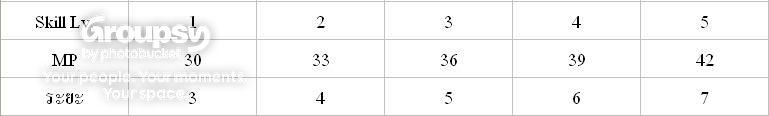
Nassingnes
Job Lv : 30
Active
ระยะ : 6
เป็นการสร้างที่ว่าง ที่จะทำให้สูญเสียพลังทั้งหมดในขอบเขตเป้าหมาย
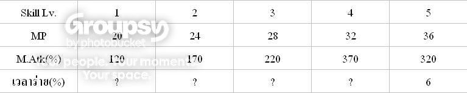
Dark Up
Job Lv : 30
Active
ระยะ : 5
ให้คุณสมบัติธาตุมืดแก่ Monster เป้าหมายในช่วงเวลาที่กำหนด
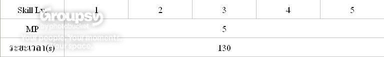
คล้ายกับการใช้ Dark Shield ใส่มอนส์เตอร์
Soul of Darkness
Job Lv : 30
Passive
ในตอนที่ Possession จะทำให้เจ้าของร่างมีความสามารถในการต่อสู้เพิ่มขึ้น โดยปริมาณที่เพิ่มขึ้นนั้น ขึ้นอยู่กับความสามารถของผู้สิงเอง
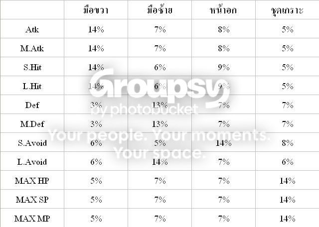
Invisible Hand
Job Lv : 35
Active
ระยะ : 6
ขอบเขต : 3x3
ทำให้เป้าหมายที่อยู่ในขอบเขตที่กำหนดเคลื่อนที่ช้าลง
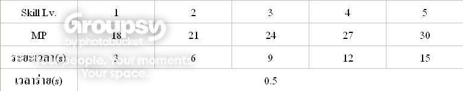
โอกาสสำเร็จ 100%
ไม่เหมือน Slow เพราะทำให้การเคลื่อนไหวช้าลงเท่านั้นไม่มีผลกับความเร็วหารโจมตี
การใช้สกิลนี้ไม่ทำให้มอนส์เตอร์ Active

Medusa Skin
Job Lv : 38
Active
ในกรณีที่ได้รับการโจมตีทางกายภาพ ในระหว่างที่แสดงผลผู้โจมตีจะอยู่ในสภาพเป็นหิน
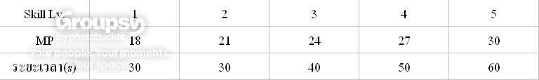
Infernal Mark
Job Lv : 40
Active
ระยะ : 5
ขอบเขต : 3x3
ติดตั้ง 3 จุดในบริเวณพิกัดที่กำหนด ระยะเวลาของการประทับนั้นจะแสดงตาม LV Mark ที่เรียน
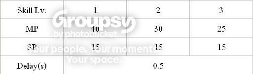
ถ้าไม่มีสกิล Mark จะไม่สามารถใช้สกิลนี้ได้
Spell Cancel
Job Lv : 40
Active
ในช่วงที่ร่ายเวทย์มนต์สามารถยกเลิกได้
Ablation
Job Lv : 42
Active
ระยะ : 6
สร้าง Damage แก่เป้าหมาย พร้อมติดสถานะผิดปกติแบบสุ่ม โอกาสจะขึ้นอยู่กับเลเวลของสกิลผิดปกติ
ที่เคยเรียนมาแล้ว
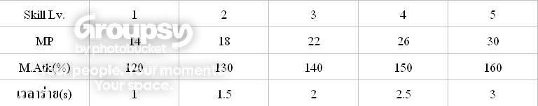
สถานะที่เกิดจากสกิลนี้จะมีระยะเวลานานกว่าสกิลสถานะผิดปกติอันอื่น
Dark Blazer
Job Lv : 47
Active
เป็นท่าที่ดูดทุกอย่างเข้าสู่จุดศูนย์กลางรวมทั้งตัวผู้เล่น ซึ่งจะเปลี่ยนไปตามระดับเลเวลที่เรียน
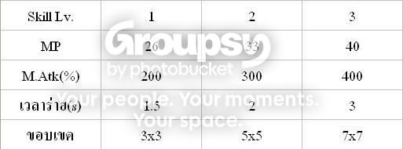
ไม่สามารถเลือกเป้าหมายได้
จุดศูนย์กลางองสกิลคือผู้ใช้
____________________________________________________________
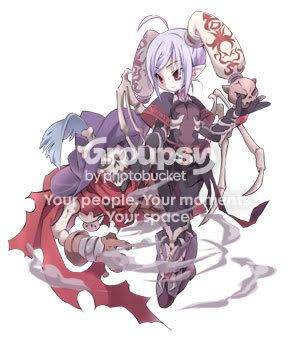
Job switching จาก Kabbalist
ดูรายละเอียดได้ที่นี่
http://www.eco.in.th/information_game_j ... 4cb3fb4982
Job bonus ของ Necromancer
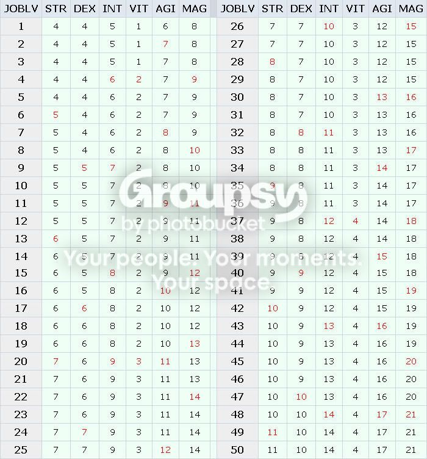
รายละเอียดสกิล
Enchantment Seal
Job Lv : 3
Active
ระยะ : 5
ขัดจังหวะการร่ายสกิลสายฟื้นฟู ในกรณีที่ทำสำเร็จจะทำให้เป้าหมาย ไม่สามารถใช้สกิลฟื้นฟูได้ในช่วงเวลาหนึ่ง
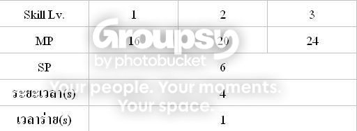
Necro Resurrection
Job Lv : 5
Passive
เมื่ออยู่สภาวะเสียชีวิต มีโอกาสฟื้นคืนชีพได้ เมื่อฟื้นแล้วจะอยู่ในสถานะ Undead ในช่วงเวลาหนึ่ง
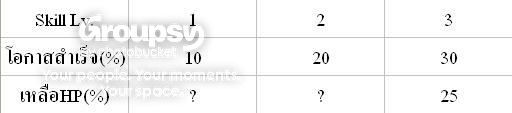
Summon Ghost
Job Lv : 7
Active
ระยะ : 6
Summon Undead Monster ประเภทของ Monster นั้น จะเปลี่ยนไปตาม Skill LV
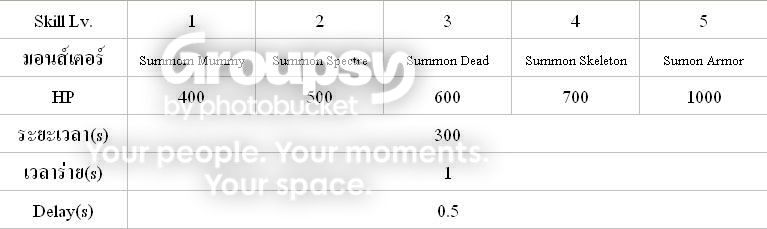
Summon Hp up
Job Lv : 9
Passive
สามารถเพิ่ม HP ให้แก่ Monster ที่เรียกออกมา ด้วยสกิล [Summon Ghost] ได้
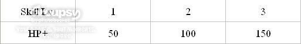
Summon Magic Up
Job Lv : 11
Passive
สามารถเพิ่มพลังโจมตีด้วยเวทมนตร์ ให้แก่ Monster ที่เรียกออกมา ด้วยสกิล [Summon Ghost] ได้
Summon Attack Up
Job Lv : 13
Passive
สามารถเพิ่มพลังโจมตีทางกายภาพ ให้แก่ Monster ที่เรียกออกมา ด้วยสกิล [Summon Ghost] ได้
Necro Healing
Job Lv : 15
Active
ฟื้นฟูค่า HP ของ Monster ที่เรียกออกมา ด้วยสกิล [Summon Ghost]
Reborn
Job Lv : 17
Active
ระยะ : 4
เพิ่มสภาพ Zombie แก่ Monster Monster ที่ตายด้วยสภาพนั้น ในช่วงเวลาที่กำหนด จะคืนชีพกลับมาเป็น Zombie
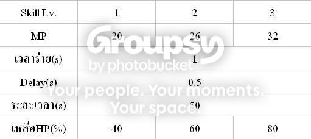
Necromancy
Job Lv : 20
Active
ระยะ : 5
ใส่วิญญาณแห่งความตายแก่เป้าหมาย หากสำเร็จ เป้าหมายจะกลายเป็น Undead ในช่วงเวลาหนึ่ง
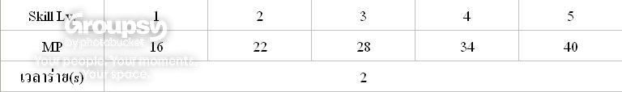
Life Take
Job Lv : 22
Active
ระยะ : 6
ดูดซึม HP ส่วนหนึ่งจากความเสียหาย ที่เกิดจากอาวุธของเป้าหมาย
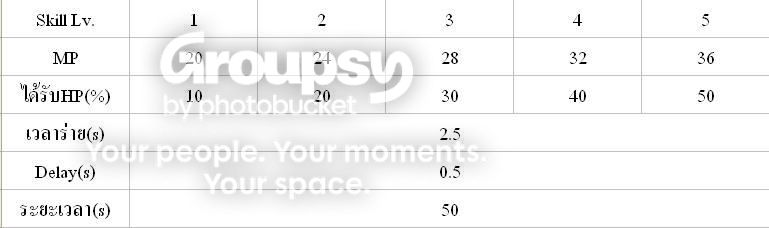
Soul Burn
Job Lv : 25
Active
ระยะ : 5
สร้าง Damage ใส่ MP ของเป้าหมาย
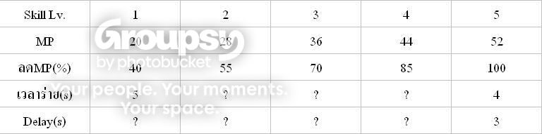
Spirit Burn
Job Lv : 27
Active
ระยะ : 5
สร้าง Damage ใส่ SP ของเป้าหมาย
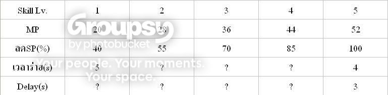
Possessed Out
Job Lv : 30
Active
ระยะ : 4
ปลดสภาพ Possession ของเป้าหมาย ในเชิงบังคับ หากสำเร็จ เป้าหมายจะกลายเป็น Undead ในช่วงเวลาหนึ่ง
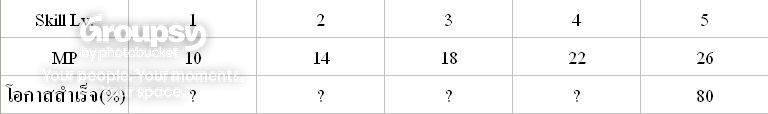
Dark Light
Job Lv : 30
Active
ระยะ : 5
สร้างเขตความมืดในบริเวณที่กำหนด ลดอัตราความแม่นยำของเป้าหมาย ที่อยู่ในขอบเขต
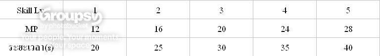
Follow Up
Job Lv : 30
Passive
เพิ่ม Damage ให้แก่ผู้ที่อยู่ในสภาวะผิดปกติ
Dark Flare
Job Lv : 33
Active
ระยะ : 6
โจมตีด้วยเวทมนตร์ ที่บรรจุพลังแห่งความมืด ก่อให้เกิด Damage อย่างต่อเนื่อง
Terror
Job Lv : 35
Active
ระยะ : 6
ทำให้เป้าหมายอยู่ในสภาพ หวาดกลัวและหนีไป ไม่มีผลกับ Boss Monster
Evil Soul
Job Lv : 40
Active
เพิ่มพลังโจมตีเวทมนตร์ธาตุมืดในช่วงเวลาที่แสดงผล
Evaporator
Job Lv : 42
Active
ระยะ : 6
ส่งเป้าหมายเข้าสู่ความมืด ไม่มีผลกับ Monster บางชนิด
Summon Death
Job Lv : 44
Active
ระยะ : 6
เรียกเจ้าแห่งความตายออกมาโจมตีเป้าหมาย
Chaos Gate
Job Lv : 50
Active
ระยะ : 6
เกิดแรงดึงดูดแห่งความมืด บริเวณรอบๆเป้าหมาย ไม่สามารถใช้ในขณะ Possession ได้
Credits :
http://ec.gamedb.info/wiki/Skill/Warlock.html
http://www.eco.in.th/
ถ้ามีอะไรผิดพลาดก็ขออภัยด้วย
ว่างๆจะค่อยมาทำต่อละกันครับ